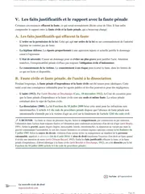

L'arrêt Costedoat expliqué simplement
L'arrêt Costedoat est rendu le 25 février 2000 par l'Assemblée plénière de la Cour de cassation. Il porte sur la responsabilité du préposé, c'est-à-dire la personne qui travaille sous l'autorité d'une autre, le plus souvent un salarié, et sur celle de son commettant, en général l'employeur. Selon l'arrêt, s'il reste dans les limites de la mission que son commettant lui a confiée, le préposé n'a pas à réparer lui-même le dommage causé à un tiers. Cette protection s'appelle l'immunité civile du préposé, et la victime se fait donc indemniser par le commettant, sur le fondement de l'article 1242 alinéa 5 du Code civil.

Que dit l'arrêt Costedoat ?
Avant cet arrêt, un préposé qui causait un dommage en travaillant pouvait être condamné personnellement, en plus de son employeur.
Il répondait en effet de sa faute sur le fondement de l'ancien article 1382 du Code civil, et son employeur répondait en plus de lui comme commettant, sur le fondement de l'ancien article 1384 alinéa 5. La victime pouvait donc poursuivre le salarié ou l'employeur, ou les deux ensemble. Sept ans plus tôt, dans l'arrêt Parfums Rochas, la chambre commerciale avait toutefois écarté la responsabilité de deux salariés restés dans leur mission. Mais les juges du fond, c'est-à-dire les tribunaux et les cours d'appel, continuaient de condamner des préposés, comme la cour d'appel d'Aix-en-Provence dans cette affaire.
Le 25 février 2000, l'Assemblée plénière met fin à ces condamnations. Le préposé qui reste dans le cadre de sa mission n'a plus rien à payer personnellement à la victime, et seul le commettant répond du dommage.
Entre 1993 et 2014, plusieurs décisions construisent le régime actuel de la responsabilité du préposé, et Costedoat en fait partie. D'abord, la chambre commerciale de la Cour de cassation refuse, dans l'arrêt Parfums Rochas du 12 octobre 1993, de condamner des salariés qui n'ont pas dépassé leur mission. Ensuite, l'Assemblée plénière généralise cette solution en 2000 avec Costedoat, et le salarié qui reste dans sa mission n'est plus condamné avec son employeur. L'Assemblée plénière rétablit alors, dans l'arrêt Cousin du 14 décembre 2001, la responsabilité personnelle du préposé pour les infractions pénales intentionnelles. Enfin, la première chambre civile étend l'immunité aux médecins salariés en 2004.
Un pilote d'hélicoptère, salarié de la société Gyrafrance, répand un herbicide sur des rizières. Le vent pousse le produit sur le terrain voisin, où il endommage des végétaux.
La cour d'appel d'Aix-en-Provence juge le pilote imprudent et le déclare responsable d'un tiers du dommage, fixé à 120 000 francs.
L'Assemblée plénière casse partiellement l'arrêt et reconnaît l'immunité civile du préposé qui reste dans sa mission.
L'arrêt Cousin limite l'immunité face aux fautes pénales intentionnelles, puis la première chambre civile l'étend aux médecins et sages-femmes salariés.

Fiche complète
Droit des obligations L2
Les faits, un épandage par hélicoptère
La SCA du Mas de Jacquines, une société civile agricole dont les époux B... sont cogérants, et M. X... cultivent du riz. Ils demandent à la société Gyrafrance de traiter leurs rizières avec un herbicide, c'est-à-dire un produit qui détruit les mauvaises herbes, répandu depuis un hélicoptère. Ce contrat lie les exploitants à la société, et le travail est confié à M. Y..., pilote salarié de Gyrafrance.
L'épandage a lieu un 7 juillet, dont l'année n'apparaît pas dans l'arrêt. C'est le pilote qui choisit le sens de son vol au-dessus de chaque parcelle, du nord au sud chez M. X... et d'est en ouest chez les époux B... D'après l'expert désigné par le juge, des vents instables soufflent ce jour-là, et des orages éclatent dans la région, notamment à Istres, avec des rafales locales plus fortes que les valeurs relevées par la station météo la plus proche. Les rotors de l'hélicoptère créent en outre des turbulences qui aggravent le risque de dispersion.
Le vent emporte donc l'herbicide hors des rizières. Le produit atteint le terrain voisin, qui appartient à M. Z..., et il y endommage des végétaux. M. Z... n'a signé aucun contrat avec les exploitants ni avec Gyrafrance, si bien qu'il est un tiers, c'est-à-dire une personne extérieure au contrat qui subit un dommage. Sa demande relève donc de la responsabilité extracontractuelle.
Juridiquement, M. Y... est le préposé de Gyrafrance, c'est-à-dire qu'il travaille sous son autorité et suit ses instructions, et Gyrafrance est son commettant. Cette qualification ouvre donc deux voies à la victime. D'une part, l'article 1382 du Code civil, devenu l'article 1240, oblige celui qui commet une faute à réparer le dommage qu'elle cause. D'autre part, l'article 1384 alinéa 5, devenu l'article 1242 alinéa 5, rend le commettant responsable du dommage causé par son préposé dans ses fonctions.
M. Z... assigne donc en réparation la SCA du Mas de Jacquines, les époux B..., M. X..., le pilote et la société Gyrafrance, mise en cause en son nom et comme civilement responsable de son pilote. Au cours de la procédure, Gyrafrance est placée en redressement judiciaire, puis en liquidation judiciaire, ce qui veut dire qu'elle cesse son activité et que ses biens sont vendus pour payer ses créanciers. On comprend alors l'intérêt, pour la victime, d'obtenir aussi la condamnation personnelle du pilote, car une société en liquidation paie rarement toutes ses dettes.
La procédure, du tribunal à l'Assemblée plénière
Le tribunal retient la faute du pilote. Selon lui, M. Y... aurait dû refuser de faire l'épandage ce jour-là, en raison des conditions climatiques. Le jugement n'est pas publié, et l'on connaît seulement ce point, que la cour d'appel reprend.
Le 26 mars 1997, la cour d'appel d'Aix-en-Provence réforme le jugement en partie. Elle met d'abord hors de cause les époux B..., parce qu'ils étaient seulement les cogérants de la SCA, une société qui a sa propre personnalité juridique et qui est devenue depuis l'EARL Louisiane Jacquines. Les dettes de cette société restent donc les siennes, et ses dirigeants n'en répondent pas personnellement.
La cour d'appel confirme ensuite la faute du pilote. Pour elle, le sens du vol, et donc celui du traitement, dépend du pilote, qui l'a choisi lui-même. Elle ajoute que la victime peut assigner le seul auteur direct du dommage, c'est-à-dire le préposé, sans mettre en cause son commettant, à condition de prouver la faute de ce préposé. Or l'expert estime que, le 7 juillet, le bon sens aurait dû conduire à renoncer au traitement par hélicoptère, ou au moins à laisser une large bande sans traitement le long des terrains voisins.
La cour d'appel déclare donc M. Y... responsable d'un tiers du dommage, qu'elle fixe à 120 000 francs. Elle le condamne in solidum avec l'EARL et M. X..., c'est-à-dire que la victime peut réclamer cette somme à n'importe lequel de ces débiteurs, celui qui paie se retournant ensuite contre les autres.
Deux pourvois sont alors formés. Le pilote attaque sa condamnation (pourvoi n° 97-17.378), et la victime attaque la mise hors de cause des époux B... (pourvoi n° 97-20.152). L'Assemblée plénière, la formation la plus solennelle de la Cour de cassation, joint les deux pourvois. Elle prend d'abord acte du désistement du pilote et de la victime à l'égard de Gyrafrance et des mandataires chargés de sa procédure collective, c'est-à-dire qu'ils renoncent à poursuivre leur recours contre eux. Elle met aussi hors de cause, à sa demande, l'assureur Generali France, qui venait aux droits de la compagnie La Concorde. Elle statue enfin le 25 février 2000.
Les arguments des parties, la mission du pilote ou sa faute
Le pilote présente un moyen unique en deux branches, fondé sur l'article 1382 du Code civil. Dans la première branche, il soutient que le préposé qui agit dans le cadre de la mission que son employeur lui a confiée, sans en dépasser les limites, ne commet pas de faute personnelle capable d'engager sa responsabilité. Or Gyrafrance l'avait chargé de faire cet épandage, et aucun motif de l'arrêt ne montre qu'il serait sorti de cette mission. La cour d'appel a donc privé sa décision de base légale, c'est-à-dire qu'elle n'a pas constaté les faits nécessaires pour le condamner. Ce raisonnement reprend presque mot pour mot celui de l'arrêt Parfums Rochas, rendu par la chambre commerciale en 1993.
La seconde branche est présentée « en toute hypothèse », c'est-à-dire pour le cas où la première serait écartée. Selon le pilote, la cour d'appel a elle-même relevé que les exploitants avaient choisi les produits et les avaient achetés. C'était donc à eux de lui donner des ordres, et au besoin de lui interdire de travailler à cause de la météo. Pour lui reprocher de ne pas avoir refusé l'épandage, la cour d'appel devait en outre constater qu'il connaissait la nature des produits, leur nocivité et leurs contraintes d'emploi. Faute de ce constat, sa faute n'est pas établie.
L'arrêt ne rapporte pas de mémoire en défense de M. Z... sur ce pourvoi. Sa position est donc celle que la cour d'appel a retenue en lui donnant raison. En effet, pour elle, la victime peut choisir de poursuivre le seul préposé, pourvu qu'elle prouve sa faute. Or le pilote a choisi lui-même le sens du vol et a maintenu le traitement malgré un vent instable, alors que le bon sens imposait d'y renoncer. Sa faute suffit donc à engager sa responsabilité personnelle, quelle que soit sa mission.
M. Z... est de son côté demandeur au second pourvoi, qui compte aussi deux branches. D'abord, l'article 4 du nouveau Code de procédure civile prévoit que les prétentions des parties sont fixées par leurs conclusions. Les époux B... n'avaient pas invoqué leur qualité de cogérants, donc la cour d'appel a excédé ses pouvoirs en les mettant hors de cause pour cette raison. Ensuite, l'article 16 du même code oblige le juge à faire débattre les parties de tout argument qu'il soulève lui-même. La cour d'appel a pourtant relevé d'office cette qualité de cogérants, sans inviter les parties à s'en expliquer.
Le préposé engage-t-il sa responsabilité personnelle ?
La Cour de cassation doit dire si un salarié qui exécute, même mal, le travail que son employeur lui a confié doit indemniser lui-même la victime, ou si cette charge revient uniquement à l'employeur.
Avant cet arrêt, les juges condamnaient en général le préposé fautif avec son commettant, sur le fondement de l'article 1382. La chambre commerciale avait pourtant jugé l'inverse en 1993, dans l'arrêt Parfums Rochas, si bien que les préposés et les victimes ne pouvaient pas savoir à l'avance qui paierait.
La solution, une immunité civile du préposé
Pour la Cour de cassation, la charge revient uniquement à l'employeur. Elle pose cette règle dans un attendu de principe, que les juges reprennent depuis dans les mêmes termes.
L'attendu de l'arrêt Costedoat
« N'engage pas sa responsabilité à l'égard des tiers le préposé qui agit sans excéder les limites de la mission qui lui a été impartie par son commettant. »Cass. Ass. plén., 25 février 2000, Costedoat, n° 97-17.378 et 97-20.152
L'Assemblée plénière casse partiellement l'arrêt d'Aix-en-Provence, au double visa des articles 1382 et 1384 alinéa 5 du Code civil, c'est-à-dire en citant ces deux textes comme fondement. Ils sont devenus aujourd'hui les articles 1240 et 1242 alinéa 5. Elle reproche à la cour d'appel d'avoir condamné le pilote, alors que personne ne soutenait qu'il avait dépassé la mission confiée par son employeur.
L'affaire est renvoyée devant la cour d'appel de Montpellier, qui doit rejuger la responsabilité du pilote sur cette base. L'Assemblée plénière rejette en revanche le pourvoi de la victime, parce que les époux B... avaient été assignés en tant que cogérants et qu'aucun agissement personnel ne leur était reproché.
Tu révises ton droit des obligations ?
Tu peux recevoir gratuitement mon guide « Réviser le droit sans s'épuiser ». Mes élèves s'en servent pour répartir leurs révisions sur tout le semestre, et ils retiennent ainsi les grands arrêts jusqu'au jour du partiel.
Pourquoi la Cour protège-t-elle le préposé ?
Le préposé suit les instructions de son commettant et travaille pour son compte, avec les moyens que le commettant lui fournit. S'il devait porter seul le risque d'une faute ordinaire dans son travail, il supporterait donc deux charges. Il obéirait d'abord comme subordonné, puis il devrait en plus indemniser lui-même chaque victime de son travail.
Le pilote a pourtant bien commis une imprudence en épandant malgré le vent, et la Cour ne le conteste à aucun moment. La faute existe donc toujours, mais l'immunité fait payer le commettant, sur le fondement de l'article 1384 alinéa 5. Le double visa de l'arrêt confirme cette lecture, car il combine les deux textes au lieu d'écarter simplement l'article 1382.
Ce transfert présente aussi un avantage pour la victime. Le commettant est en effet presque toujours une entreprise plus solvable que son salarié, c'est-à-dire plus capable de payer, et il est couvert par une assurance de responsabilité civile. En envoyant la victime vers lui, l'arrêt rend son indemnisation plus sûre, même si la Cour ne donne pas explicitement cette justification économique.
La portée, un régime construit entre 1993 et 2014
Avant Costedoat, la solution classique admettait le cumul, c'est-à-dire la condamnation du préposé fautif en plus de son commettant. La chambre commerciale s'en était pourtant écartée sept ans plus tôt, dans l'arrêt Parfums Rochas du 12 octobre 1993, rendu sur le pourvoi n° 91-10.864. Dans cette affaire, la société Rochas poursuivait pour concurrence déloyale une société concurrente et deux de ses salariés. La chambre commerciale approuve la cour d'appel de Bordeaux d'avoir mis les deux salariés hors de cause, parce qu'ils avaient agi dans le cadre de la mission confiée par leur employeur sans en dépasser les limites.
Costedoat étend cette solution à toutes les chambres et met fin au cumul dès que le préposé reste dans sa mission. Son critère s'appuie sur une notion déjà connue, l'abus de fonctions, que l'Assemblée plénière avait posée le 19 mai 1988.
D'après cet arrêt de 1988, le commettant échappe à sa responsabilité seulement si trois conditions sont réunies. D'abord, le préposé doit avoir agi hors de ses fonctions. Ensuite, il doit avoir agi sans autorisation. Enfin, il doit avoir poursuivi un but étranger à ses attributions. Ces trois conditions doivent être réunies ensemble, ce qui rend l'abus difficile à prouver.
Costedoat parle des limites de la mission, alors que l'arrêt de 1988 parlait d'abus de fonctions. La logique reste pourtant la même, car un préposé qui dépasse sa mission sort en pratique de ses fonctions.
Le 14 décembre 2001, l'Assemblée plénière limite cette immunité dans l'arrêt Cousin. Elle juge que le préposé condamné pénalement pour une infraction intentionnelle ayant causé un préjudice à un tiers engage sa responsabilité civile personnelle, même s'il a agi sur l'ordre de son commettant.
L'exigence d'une condamnation pénale limite l'exception. Elle empêche en effet le juge civil de qualifier trop facilement une faute d'intentionnelle pour écarter Costedoat.
Les chambres de la Cour de cassation ont ensuite hésité sur l'étendue de cette exception. Dans un arrêt du 21 février 2008, la deuxième chambre civile a semblé viser toute infraction pénale, même non intentionnelle, et aussi la faute civile intentionnelle. Elle élargissait ainsi nettement les cas où le préposé répond personnellement.
En revanche, la chambre criminelle a recentré l'exception sur l'infraction intentionnelle dans un arrêt du 27 mai 2014, en refusant qu'une simple infraction pénale non intentionnelle suffise à écarter l'immunité. Les deux chambres restent donc partagées sur ce point.
L'immunité a par ailleurs été étendue aux professions qui gardent une indépendance technique, c'est-à-dire qui choisissent elles-mêmes comment faire leur travail, comme les médecins. Par un arrêt du 13 novembre 2002, la première chambre civile avait d'abord refusé l'immunité de Costedoat aux médecins salariés.
Deux ans plus tard, le 9 novembre 2004, elle est revenue sur cette position. Les deux arrêts rendus ce jour-là concernaient un médecin et une sage-femme, tous deux salariés d'une clinique.
Elle a jugé que le professionnel de santé salarié qui agit dans les limites de la mission confiée par son employeur n'engage pas sa responsabilité envers le patient, même s'il choisit librement le traitement. Le juge regarde donc seulement la mission, quel que soit le degré d'autonomie technique du préposé.
La critique, entre cohérence et risque pour la victime
Les auteurs se sont partagés sur Costedoat. Dans sa note au Recueil Dalloz, Philippe Brun salue une solution qui traite le préposé comme un élément de l'organisation de l'entreprise, plutôt que comme un responsable autonome.
Dans ses observations à la Revue trimestrielle de droit civil, Patrice Jourdain souligne que la solution tient enfin compte de la situation réelle du salarié. En effet, le salarié qui exécute le travail n'en décide pas l'organisation.
Dans sa note à la Semaine juridique, Geneviève Viney formule la critique la plus argumentée. Elle approuve l'immunité pour les fautes légères nées des contraintes du travail. En revanche, le préposé devrait selon elle rester personnellement tenu de ses fautes lourdes, dont les conséquences dépassent les risques normaux de l'activité.
Cette réserve rejoint une difficulté pratique. Il est souvent difficile de séparer la mauvaise exécution, couverte par l'immunité, du dépassement de mission, qui la fait disparaître. Or la victime doit prouver ce dépassement, et les juges le retiennent rarement.
L'affaire elle-même montre enfin le risque pour la victime. Gyrafrance avait été placée en liquidation judiciaire, si bien que l'immunité du pilote oblige la victime à se faire payer par une société qui a cessé son activité, sauf si un assureur couvre ce dommage.
Comment utiliser l'arrêt Costedoat dans une copie
Dans une dissertation. Tu cites Costedoat dès que le sujet touche à la responsabilité du fait d'autrui, c'est-à-dire la responsabilité d'une personne pour le dommage causé par une autre. Il sert aussi dans un sujet sur le lien entre la faute personnelle et la responsabilité de l'employeur.
Tu montres d'abord l'abandon du cumul, amorcé par Parfums Rochas et généralisé par Costedoat, puis tu continues avec Cousin et l'extension aux professions médicales. J'explique toute la méthode sur ma page sur la dissertation juridique.
Dans un commentaire d'arrêt. Si tu commentes Costedoat lui-même, tu distingues bien les deux temps du raisonnement. D'abord, le préposé qui reste dans sa mission échappe à toute responsabilité personnelle. Ensuite, la dette de réparation passe entièrement au commettant.
Mes pages sur le commentaire d'arrêt et sur la fiche d'arrêt détaillent toute la méthode.
Dans un cas pratique. Dès qu'un énoncé fait intervenir un salarié qui cause un dommage à un tiers pendant son travail, tu vérifies d'abord s'il a excédé les limites de sa mission.
S'il est resté dans le cadre de ce qui lui a été confié, seul le commettant répond du dommage, sur le fondement de l'article 1242 alinéa 5. En revanche, s'il en est sorti, ou s'il a commis une infraction pénale intentionnelle, la victime peut de nouveau agir contre lui personnellement.
Ma fiche de droit des obligations L2 relie pas à pas ce raisonnement au reste de la responsabilité civile. Elle traite par exemple la responsabilité des parents posée par l'arrêt Bertrand et la garde de la chose définie par l'arrêt Franck.
Les erreurs à éviter avec l'arrêt Costedoat
- Garder la faute du préposé dans ton raisonnement. Le pilote reste fautif dans les faits. L'immunité fait seulement passer l'obligation de réparer au commettant.
- Rapprocher limites de la mission et abus de fonctions. Les deux notions désignent en pratique la même limite. L'abus de fonctions a été posé en 1988 pour le commettant, et les limites de la mission en 2000 pour le préposé.
- Mentionner l'exception posée par l'arrêt Cousin. Depuis 2001, le préposé condamné pour une infraction pénale intentionnelle répond de nouveau personnellement, même s'il agissait sur ordre.
- Étendre l'immunité aux professions indépendantes dans leur technique. Depuis 2004, elle protège aussi les médecins et sages-femmes salariés, même s'ils choisissent librement le traitement.
Questions fréquentes
Que dit l'arrêt Costedoat en une phrase ?
Pourquoi l'arrêt Costedoat est-il si important ?
Quelle est la date et la juridiction de l'arrêt Costedoat ?
L'arrêt Costedoat est-il toujours d'actualité ?
Comment citer l'arrêt Costedoat en copie ?

Après l'arrêt Costedoat, révise tout le programme de droit des obligations.
Ma fiche de droit des obligations L2 reprend chaque notion avec les grands arrêts qui la fondent. Les explications restent simples, pour que tu les comprennes à la première lecture et que tu t'en serves en commentaire comme en cas pratique.
Voir la fiche de droit des obligations L2